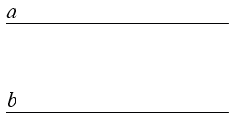

Все точки каждой из двух параллельных прямых равноудалены от другой прямой.
Рассмотрим параллельные прямые a и b

Отметим точку А на прямой a и проведем из этой точки перпендикуляр АВ к прямой b.
Отметим точку Х на прямой a и докажем, что расстояние от точки Х до прямой b равно АВ. Проведем из точки Х перпендикуляр ХУ к прямой b.
ХУ⏊ b , следовательно, ХУ⏊a (т.к. прямая перпендикулярная к одной из параллельных прямых перпендикулярна и ко второй из них).
Рассмотрим △АВУ и △АХУ: ∠В =∠Х = 900, т.е. △АВУ и △АХУ прямоугольные, АУ - общая гипотенуза, ∠ 1 = ∠2 (т.к. они накрест лежащие при пересечении параллельных прямых a и b секущей АУ), следовательно, △АВУ =△АХУ (по гипотенузе и острому углу), ХУ = АВ.
Точка Х находится на расстоянии АВ от прямой b, а так как эту точку мы выбрали произвольно, все точки каждой из двух параллельных прямых a и b равноудалены от другой прямой. Что и требовалось доказать.
Из доказанной выше теоремы следует, что расстояние между параллельными прямыми - это наименьшее расстояние (перпендикуляр) от каждой точки одной из этих прямых до другой прямой.
Все точки плоскости, расположенные по одну сторону от данной прямой и равноудаленные от нее, лежат на прямой параллельной данной.
Дано: прямая b, А и С∉b, АВ⏊b, СE⏊ b, АВ = СЕ.
Доказать: А и С∈a и a ∥ b.
Доказательство:
По аксиоме параллельных прямых через точку А проходит единственная прямая параллельная прямой b. Проведем через точку А прямуюa параллельную b.
По теореме, доказанной выше, все точки, лежащие на прямой a равноудалены от точек прямой b.
Предположим, что точка С не лежит на прямой a, тогда расстояние от точкиС до прямой b будет больше или меньше, чем расстояние АВ.
Но по условию АВ = СЕ, следовательно, получили противоречие, значит, наше предположение неверно и А и С∈a, при этом по построению a ∥ b. Что и требовалось доказать.
Множество всех точек плоскости, находящихся на данном расстоянии от данной прямой и лежащих по одну сторону от нее, есть прямая, параллельная данной прямой.
Пусть a - данная прямая, d - данное расстояние. Отметим на прямой a произвольную точку А и проведем отрезокАВ длины d так, что АВ⏊a, через точку В по аксиоме параллельных прямых проходит единственная прямая параллельная прямой a. Проведем через точку В прямую b параллельную a.
По доказанной выше теореме все точки прямой b находятся на расстоянии d от прямой a, т.е. все эти точки принадлежат искомому множеству. В силу обратной теоремы любая точка искомого множества лежит на прямой b. Значит, прямая b является геометрическим местом всех точек, удовлетворяющих данному условию. Что и требовалось доказать.
Геометрическое место точек, удовлетворяющих данному условию - множество всех точек, удовлетворяющих какому-либо условию.